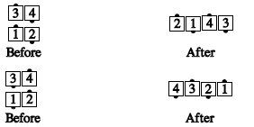
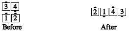
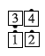

From box circulate formation: Without letting go hands with the leads, the trailers Extend and U-Turn Back, to end with their original outside hands joined. The leads follow along, becoming the ends of the resulting wave.

From 2x2 formations where half the box is a couple and the other is a right-hand mini-wave: Those in the couple do a facing-couples Recycle, and those in the mini-wave do a Split Recycle. This ends in a right-hand wave.

This can't be done when the mini-wave is left-handed:

Where not otherwise ambiguous, it is permissible to call simply, "Recycle" when you mean "Split Recycle". For example, from columns, you could call "Outsides Partner Tag while the centers Recycle" and the meaning is clear. From parallel waves, though, "Recycle" and "Split Recycle" are different, and one must not be called when the other is meant.
© Copyright 1983, 1986-1988, 1995-2017 Bill Davis, John Sybalsky and CALLERLAB Inc., The International Association of Square Dance Callers. Permission to reprint, republish, and create derivative works without royalty is hereby granted, provided this notice appears. Publication on the Internet of derivative works without royalty is hereby granted provided this notice appears. Permission to quote parts or all of this document without royalty is hereby granted, provided this notice is included. Information contained herein shall not be changed nor revised in any derivation or publication.